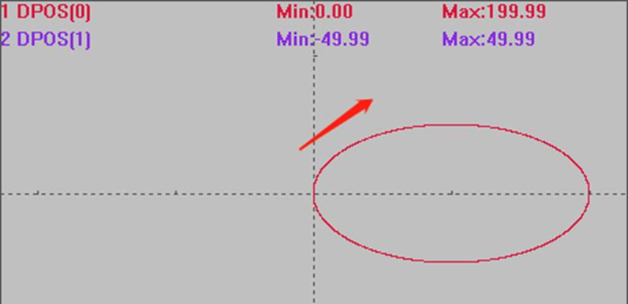
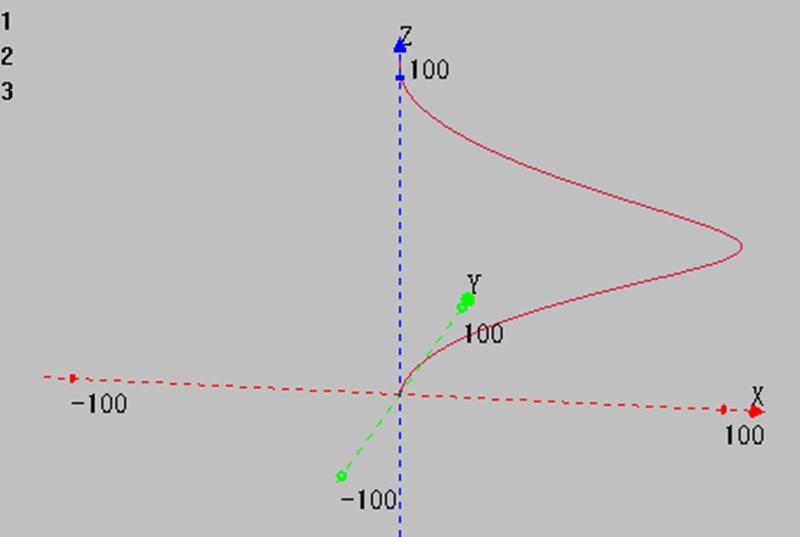

|
类型 |
多轴运动指令 | ||||||
|
描述 |
椭圆插补，中心画弧，相对运动，可选螺旋。
BASE第一轴和第二轴进行椭圆插补，相对移动方式，可选第三个轴同步螺旋。 自定义速度的连续插补运动可以使用SP后缀的指令，见*SP描述。 可画整椭圆。 只能画长轴（短轴）与X平行或垂直的椭圆。 | ||||||
|
语法 |
MECLIPSE (end1, end2, centre1, centre2, direction, adis, bdis[, end3]) end1：终点第一个轴运动坐标，相对于起始点 end2：终点第二个轴运动坐标，相对于起始点 centre1：中心第一个轴运动坐标，相对于起始点 centre2：中心第二个轴运动坐标，相对于起始点 direction：0-逆时针，1-顺时针
adis：第一轴的椭圆半径，半长轴或者半短轴都可 bdis：第二轴的椭圆半径，半长轴或者半短轴都可，ab相等时自动为圆弧或螺旋 end3：第三个轴的运动距离，需要螺旋时填入
坐标位置请确保正确，否则实际运动轨迹会错误。 | ||||||
|
适用控制器 |
通用 | ||||||
|
例子 |
例一 不进行螺旋 WAIT IDLE(0) BASE(0,1,2) ATYPE=1,1,1 '设为脉冲轴类型 UNITS=100,100,100 SPEED=100,100,100 '主轴速度 ACCEL=1000 ,1000,1000 '主轴加速度 DECEL=1000 ,1000,1000 DPOS=0,0,0 TRIGGER '自动触发示波器 MECLIPSE(0,0,100,0,1,100,50) '中心(100,0)，终点(0,0)，半短轴50，半长轴100，顺时针画整椭圆，不进行螺旋
插补轨迹 DPOS(0)垂直刻度100 DPOS(1)垂直刻度100 
例二 进行螺旋 RAPIDSTOP(2) WAIT IDLE(0) BASE(0,1,2) ATYPE=1,1,1 '设为脉冲轴类型 UNITS=100,100,100 SPEED=100,100,100 '主轴速度 ACCEL=1000 ,1000,1000 '主轴加速度 DECEL=1000 ,1000,1000 DPOS=0,0,0 TRIGGER '自动触发示波器 MECLIPSE(0,0,100,0,1,100,50,200) '中心(100,0)，终点(0,0)，半短轴50，半长轴100，顺时针画整椭圆圆弧，进行螺旋，第三轴运动距离200
XYZ模式下轴0轴1轴2插补轨迹，在例一的基础上合成Z轴的运动  | ||||||
|
相关指令 |